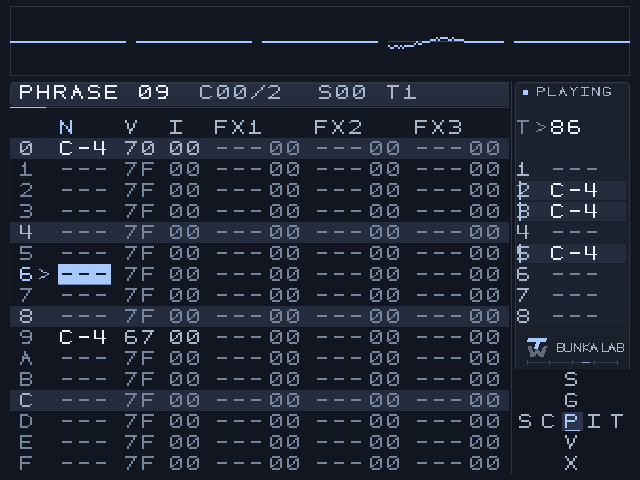
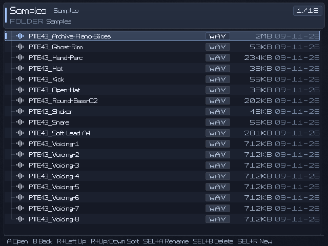

TrackWerk 0.9 / Field guide
Your first sound.
Your next workflow.
Choose the installation route for your device, find your sounds and follow one idea from source to finished pattern.
Same Studio.
Different machines.
An Android APK is not a Linux port. Start with the operating system your handheld actually runs.
| Your device | Package | Online sources |
|---|---|---|
| Android handheld / phone | Android APK, Android 8 or newer | With an Internet connection; provider support varies |
| Original Trimui Brick / Hammer | Native Brick package for KNULLI | Requires a working network connection |
| Miyoo Mini Plus | Mini Plus Online, Onion 4.3.1-1 reference setup | Wi-Fi; final physical connection confirmation pending |
| Original Miyoo Mini | Mini Offline for Onion | No built-in Wi-Fi; local audio workflow |
The R36S is a separate Linux target, not an Android device. This release does not certify a TrackWerk package for it. Polyend Tracker Mini firmware is outside this release.
Open the download selector ↗Install TrackWerk.
Keep earlier work safe.
- Choose the public TrackWerk package.Use
TrackWerk-0.9-Android.apk. It has TrackWerk’s own Android application identity and supports ARM64, ARMv7 and x86_64 on Android 8 or newer. - Keep any earlier app installed.The public TrackWerk APK installs alongside the earlier beta app. It does not overwrite that app or automatically move its private data.
- Export app-private work before migrating.In the earlier app, save or export projects and their referenced samples to a normal shared folder, such as Documents/TrackWerk. A project alone is not a copy of its sample audio. Leave the earlier app and its storage intact until you have reopened the exported work successfully.
- Install the APK.Copy it to the handheld and open it through the file manager. If Android asks, allow that file manager to install this package.
- Grant your shared media folder.Use Android’s system folder picker to select the shared folder containing Samples, Projects and Presets. An existing shared collection can stay in place; an older app’s private Android/data folder may not be accessible to the new app.
- Set preferences and test a familiar song.The new app does not automatically inherit another app identity’s private appearance or controller settings. Set these in TrackWerk, then load a known project and confirm its samples resolve.
Future public updates retain TrackWerk’s application identity and signature, so Android can update an existing TrackWerk installation in place. If you were separately given a private compatibility APK, it belongs to its matching private app identity and is not the public download here. Do not uninstall or clear an earlier app as a migration shortcut.
The RG405V is a target device, not a certificate for every Android handheld. Controller mapping, audio drivers, microphones and USB audio interfaces still need testing on the actual device.
Prepare KNULLI once.
Update the app separately.
KNULLI is the operating system. TrackWerk is an application in its Ports menu.
First installation
- Begin with a suitable KNULLI card.If KNULLI already works, keep it. For a new card, follow the official KNULLI installation guide and choose the image for the Trimui Brick. Imaging a card is an operating-system installation, not an app update.
- Finish KNULLI's first boot.Let the device complete its setup, then shut down fully. The SHARE data area is prepared during that first boot.
- Open the SHARE area on the computer.Use the working data partition or a supported transfer method. Do not place TrackWerk's music data in the boot partition.
- Install the Brick first-start pack.Extract
TrackWerk-0.9-Brick-KNULLI.zip. CopyTrackWerk.shandpockettracker_extreme/intoSHARE/roms/ports/. Retain other apps and existing files. - Boot and open the tracker.Safely eject the card, insert it into the powered-off Brick, then choose Ports → TrackWerk. The package uses the established standalone launch route. Refresh KNULLI's game list if needed.
Use the included setup_brick_menu.py on the computer to add the title and artwork. Review its plan first, then apply it:
python3 setup_brick_menu.py --target /Volumes/SHARE/roms/ports/pockettracker_extreme python3 setup_brick_menu.py --target /Volumes/SHARE/roms/ports/pockettracker_extreme --apply
Adjust the mounted path; Windows uses py and the appropriate drive letter. These computer helpers require Python 3.9 or newer. The menu helper preserves other Ports entries.
Factory presets are prepared by the launcher on first start. You can prepare missing presets before ejecting with the installed pockettracker_extreme/tools/prepare_presets.py helper. Existing edited presets are retained. Allow initial preparation to finish on a slow card.
Where your samples go
SHARE/
roms/ports/pockettracker_extreme/data/
Samples/
Projects/
Presets/
Themes/Create your own genre, kit and artist folders inside Samples. Copy actual unpacked audio files there, then reopen LOAD in the tracker. The legacy internal name pockettracker_extreme is intentional: keeping it preserves existing project paths and controller setup.
Updating an already working Brick
Use the TrackWerk-0.9-Brick-Program-Factory-Update.zip asset, not a new KNULLI image. Its checked updater selects the existing app folder, backs up the executable, verifies the new file and adds missing factory presets. The menu helper updates this tracker's name and image while retaining its launcher path and other Ports entries. See Safe updates.
KNULLI's storage format and transfer route depend on the installation. Follow its official SD-card access guide. A computer asking to format an unfamiliar partition is not a reason to erase a working card.
Use Onion.
Choose Online or Offline.
- Keep a working Onion installation.For a new card, follow the official Onion installation instructions for your exact device and firmware. TrackWerk's app package does not require replacing an already working OS.
- Choose the correct TrackWerk pack.
TrackWerk-0.9-Miyoo-Mini-Onion.zipis the original Mini's offline package.TrackWerk-0.9-Miyoo-Plus-Onion.zipis the Mini Plus Online package. Its local music functions also work without a network connection. - Keep the complete extracted package together on the computer.The installer needs
install_miyoo.py,Card-Payload,Factoryand both manifests. Use the computer installer shown below; it verifies the profile, backs up replaced program files and adds only missing factory presets.With Python 3.9 or newer on the computer, review the first command's plan and card/profile before applying:
python3 install_miyoo.py --card /Volumes/YOUR_ONION_CARD python3 install_miyoo.py --card /Volumes/YOUR_ONION_CARD --apply
Adjust the mounted path. On Windows use
pyand the card's drive letter. The installer keeps existing Samples, Projects, settings and edited presets; it never formats or updates Onion. - Place audio in the shared media home.Both TrackWerk variants use
/mnt/SDCARD/PocketTrackerExtreme. Put your sounds under its Samples folder and your songs under Projects. - Start from Apps.On Mini Plus choose Apps → TrackWerk - Online for Internet sources. An already installed Offline entry can be retained. On the original Mini use Apps → TrackWerk. B leaves the GameSwitcher if it opens first.
SD CARD/
App/
Roms/
PocketTrackerExtreme/
Samples/
Projects/
Presets/
Themes/Mini Plus network check
Connect Wi-Fi, set the real date and time, then open the Online entry. Version 0.9 corrects the selection of an inherited network library without HTTPS; it keeps certificate verification enabled. The reference Online setup uses Onion 4.3.1-1. This fix passed the software source-to-WAV workflow; its physical Wi-Fi acceptance is still pending.
Original Mini
The original Mini has no built-in Wi-Fi. Its offline build supports local samples, synthesis, sequencing and the new storage-based long-WAV preview. Both Mini models have limited memory: keep an ear on demanding synth/effect combinations and edit smaller excerpts from long recordings.
Replace the program.
Keep the musical context.
Songs need their media, and your settings should survive a new look.
- Save and close.Save the current song and quit TrackWerk. Fully shut down a handheld before moving its SD card.
- Keep a copy of your data home.Include Samples, Projects, Presets, recordings, custom Themes and settings. A project file by itself is not a backup of the referenced audio.
- Use the matching update route.Existing TrackWerk Android app: install its correctly signed update over that same app. Earlier beta Android app: follow the separate migration steps above and keep it installed. Brick: use the checked program updater. Miyoo: use the checked computer installer from the matching package.
- Retain established paths.Do not rename PocketTrackerExtreme or pockettracker_extreme data folders during the rebrand. Do not clear storage, uninstall the old Android app or flash a new OS as an app-update step.
- Verify a familiar song.Reopen the app, check your appearance and controls, load a saved project and confirm its samples resolve. Then test a new 0.9 feature.
The public library contains 2,048 parameter-based synth instruments and 256 effect/master settings. The user's personal drum library, private songs and recorded samples are separate from the public download.
Rollback on Brick
The program updater stores the previous executable under .pte-program-backups. Its --rollback option verifies that backup before restoring the executable. The menu helper also retains an exact XML backup and the old image. Read the included updater guide before restoring; music data is kept in place.
A few buttons.
A precise vocabulary.
The active screen owns the controls. Use the context help when you move between the tracker, a browser, the Studio and a sample editor. Existing custom mappings remain yours.
- ↑ ↓ ← →
- Move the cursor. Browsers use up/down for items and left/right for pages.
- A
- Confirm, open, load or act on the selected item.
- A + a direction
- Edit a value. Fine and coarse changes depend on the current screen.
- B
- Return or clear according to context; leave a file browser.
- Start
- Transport. In a sample browser, preview the selected audio.
- Select
- Context help in the configured compact/full help mode.
- R + ← / →
- Move through the main tracker screens.
- R + Select
- Open Studio directly from a main tracker screen; use the same chord to leave it.
- B + ← / → in Studio
- Switch Synth, FX Rack, Master, Punch, Input, Drumlab, Style and Digging pages.
- L + Select
- Open the Punch performance page from a musical tracker screen.
Android offers matching touch controls. Close a dialog or editor that owns the controls before opening a different page.

Organize once.
Find it again.
Keep a clear media hierarchy. Drum kits, breaks, one-shots and recordings can live in your own subfolders inside Samples. A saved TrackWerk song uses the .ptp format.
Samples/ Drums/Your-Kit/ Breaks/ One-Shots/ Recordings/ Projects/ Presets/
Open INSTRUMENT → LOAD → Samples / Audio. Navigate into a folder, preview with Start and load with A. The browser remembers the last location for the corresponding workflow, making drum replacement less repetitive.
Use the categorized synth/factory entry from the instrument's LOAD screen when you want an instrument preset rather than a sample file or external SoundFont.

Moving a song between devices
Move its actual media as well as the project. Keep relative names and folder structure where possible. Android content:// grants are not ordinary Linux paths: copy the real media files and reassign them through LOAD if needed. Save a converted or relocated song under a new name before replacing a working copy.
Importing an M8 song
- Copy the original
.m8ssong with its referenced sample hierarchy intact. - Open the song through PROJECT → LOAD and read the import report.
- Check missing audio, supported sampler/arrangement conversion and omitted engines or effects.
- Save the converted
.ptpas a new project and compare it with the original.
M8 import is partial compatibility, not M8 firmware emulation. Unsupported synths and effects are omitted and reported.
Find. Listen.
Mark. Flip.
Use a search when you know what you want. Use genre and Random when you want to be surprised.
- Open the Studio's Digging / Source Sampler page.Choose a supported Internet source, such as Internet Archive, on a connected device. The original Mini uses local files instead.
- Find a result, then select a track.A collection or album may contain several recordings. Open the result and choose the specific track you want.
- Preview before cutting.Use Start or the transport row, adjust the preview position and listen for a useful phrase. A title alone is not a musical decision.
- Set IN and OUT.Press A on each marker row at the current preview position. Use the available fine adjustment to place the boundary deliberately.
- Render a short selection.Try 10–15 seconds first. The Mini Plus source renderer limits a region to 60 seconds; other supported profiles allow up to 180 seconds. The current screen displays the limit.
- Import the new WAV.Choose the target instrument, stop the tracker where required by the import action, then select Import WAV. The normal sample editor opens for slicing and cleanup.
- Give the fragment a new role.Keep a full musical phrase when its bass and harmony work together, or isolate accents and rearrange selected slices. Add your own drums and save the project with its clip and source details.
The illustrated source is Modern Jazz Samba by Kevin MacLeod, licensed under CC BY 4.0. The film example selects 00:11.334–00:33.922, an intact eight-bar passage of about 22.6 seconds, and opens the rendered WAV in the editor. Keeping a complete phrase lets the original bass and harmony breathe. For these two arrangements, the clip was gently tempo-matched from 85 to 86 BPM with its pitch preserved during preparation outside TrackWerk. Source and adaptation credits.
Availability to stream does not grant reuse rights. Choose your own recordings, public-domain sources or a license suitable for the use you intend. Different items in the same archive can have different licenses.
Provider availability can change independently of TrackWerk. This release's main documented workflow uses Internet Archive; YouTube extraction is not a universal or permanent release promise.
Preview the whole source.
Edit the useful part.
A long WAV no longer needs a full decoded audio buffer just to hear where you want to cut.
- Choose a large WAV in LOAD or preview.Memory-heavy files automatically open LONG SAMPLE / CHOP SOURCE.
- Move through the recording.Start plays or pauses; up/down selects a row. Left/right changes the selected position or marker. R + left/right seeks by five seconds.
- Place the boundaries.Select IN and press A to mark the current position. Do the same for OUT. A + left/right adjusts a marker by 10 ms; A + up/down by 10 seconds.
- Choose a practical excerpt.Quick length offers useful ranges. The screen limits the editable excerpt according to free memory, channel count, sample rate and editing workspace.
- Choose Crop to editor.A new WAV is saved and opened in the sample editor. The source file is retained. Continue with slices, fades and normal editing.
Select opens the exact guide for this screen. B returns to the original browser. Cancel leaves the source and old instrument intact. Load whole file is available when the complete decoded file and editing workspace fit.
Why is there still an excerpt limit?
Preview streams from storage, but editing needs audio buffers and undo space. A small-memory Miyoo therefore has a lower editing allowance than a stronger handheld. There is no universal 20 MB limit across every device. Start with a short range and use the current screen's allowance.
The storage preview supports mono/stereo WAV with PCM 8/16/24/32-bit, Float32 and supported WAVE-EXTENSIBLE headers. Other compressed formats continue through their existing loaders.
A boundary is part
of the rhythm.
- Open EDIT after loading a sample.Start with the whole waveform so you understand its shape.
- Select a start or end value.Use A with a direction for the appropriate fine or coarse change.
- Zoom into the boundary.In the sample editor, R + up/down changes zoom. This established shortcut is unchanged in 0.9.
- Choose a slicing method.Use transient detection for a break, equal divisions for a grid or manual markers for intentional phrasing.
- Audition the result.Preview with Start. Inspect the attack and tail, apply small fades or declicking where useful and listen again.
- Save deliberately.Use SAVE or SAVE AS for the edited sample, then save the project. Keep an original when experimenting with destructive processing.
The editor also offers normalization, silence, reverse, duplicate, DC repair, offline effects and other existing tools. Undo helps you compare a decision; it does not replace saving a useful source copy.
The DURATION value is a musical-length assumption. The displayed BPM is calculated from that setting and the sample length; it does not automatically detect the recording’s beat.
Choose the engine.
Then listen to the controls.
- Open Studio directly.Use R + Select on a main tracker screen, the instrument's STUDIO entry or the synth/factory section in LOAD.
- Check the target instrument.Select the slot you mean to edit before replacing a sound.
- Choose an engine and a preset.Explore categorized bass, leads, pads, keys, textures and drum-synth starting points.
- Audition it.Hold L for a steady note, then release. Or play a phrase using the selected instrument.
- Explore the relevant parameters.A + directions edits values. R + left/right moves through the engine's additional parameter pages.
- Load a draft once.A draft uses LOAD INTO INSTRUMENT. Once the slot is LIVE, subsequent edits affect that loaded synth while its sequence plays.
- Save your own variation.Store an instrument preset and save the project.
| Family | Musical starting points |
|---|---|
| Plaits | Multi-model voices, oscillators, percussion and digital colors |
| Braids | A broad set of digital oscillator models |
| Rings | Resonant strings, struck and physically modeled textures |
| Elements | Excitation and resonator-based voices |
| Granular | Clouds-derived texture and granular articulations |
| Studio DSP | Additional synthesis and sound-shaping models |
Model variations share underlying engines. TrackWerk does not reproduce every physical input or every behavior of the original hardware modules. Emilie Gillet and the original Mutable Instruments contributors retain their credits.
Generate a direction.
Keep control of the notes.
- Load and assign 5–8 sounds.Start with kick, snare, closed hat, open hat and percussion. Add roles as needed.
- Open Studio → Drumlab.Choose a style such as hip-hop, boom bap, lo-fi, drum & bass, house, techno, dub or breakbeat.
- Shape the result.Set length, density, variation, swing, humanize and fill. A different seed gives another deterministic starting point.
- Generate and listen.Regenerate after changing the generation settings before relying on the preview.
- Apply to the intended pattern.Check the destination and status. Edit the resulting tracker phrases, remove notes and write your own variations.
Global swing and groove
The Project menu offers global swing/shuffle. The tracker groove editor and Drumlab have their own timing tools. Compare each change deliberately: stacked timing changes can move accents further than expected. Velocity, rests and a well-placed ghost note often do more than another layer of hits.
Hold a gesture.
Capture a new idea.
- Start a sequence and open Punch.Use L + Select from a musical tracker screen or choose Studio → Punch.
- Choose a bank.L/R moves through Rhythm, Tape, Filter, Dub/Space, Cut/Glitch, Granular, Modulation and Damage. Each bank shows eight pads.
- Select and hold.Use the D-pad to select a pad. Hold A to apply it and release A to restore the unpunched mix through a short ramp.
- Move while performing.While holding A, directions can select another active pad. Start remains transport.
- Keep a useful performance.Use internal resampling to capture the application's output into a new sample, then return to the editor and sequence it.
Punch has no latch mode. Leaving the page, stopping, help, panic or lost controller focus releases the gesture. Internal resampling captures TrackWerk's own output; microphone or USB input is a separate recording route.
Use a preset
as a starting point.
The additional factory collection contains 64 reverbs, 64 delays, 96 Studio FX and 32 mastering settings.
Reverb and delay sends
Open the main EFFECTS page, select the REVERB or DELAY preset row and use LOAD. Browse Extreme_Collection and its categories. A loads; B returns. Presets retain the project's existing send amounts, so raise the instrument's send when you want to hear the space.
Reverb categories include rooms, booths, chambers, halls, plates, modulated and vintage spaces. Delays cover slaps, straight, dotted and triplet timing, tape, dub, stereo and space.
Studio FX Rack
Open Studio → FX Rack. The library row opens categorized files; choose a preset, apply it and adjust wet/dry, color, texture and feedback as relevant to the algorithm. Resonators respond to incoming sound. Warps-derived color and Clouds-derived textures offer further transformations.
Mastering
Start with the track balance. Use drive, compressor threshold and ratio, attack and release, stereo width, high-pass filtering, output gain and peak ceiling with restraint. The Master library offers Transparent, Drum Buses, Character and Space Control categories.
- Compare changes at similar loudness and check the effect on the groove.
- Keep enough headroom while shaping the sound. Raising output is not a substitute for balancing tracks.
- Use width deliberately and check the result in mono where possible.
- Render a mix or stems and listen to the result outside the loop.
The transfer graphic describes the settings; it is not a calibrated loudness meter. Custom slots remain available. Loading an FX file retains master controls; loading a master file retains the FX selection.
Readable or restless.
Choose your own balance.
Open Studio → Style. Up/down selects Design collection, Material or Typeface. A + directions changes the selected setting. These three choices are independent.
Classic and the original six display styles remain. Ten cleaner reading faces add Clear Mono, Studio Sans, Compact Grid, Soft Pixel, ISO Terminal, Wide Screen, Paper Type, LCD Clean, Rail Mono and Night Editor. Pair a restrained face with a textured material, or keep the surface quiet and let the lettering carry the character.
What is verified.
What still needs a device.
| Area | 0.9 evidence and limit |
|---|---|
| Native engine & Studio | 25 native core checks; effect library tested across all 256 added presets and multiple allocator states. This is software evidence, not a performance certificate for every combination. |
| Android | The public APK uses com.kidbunka.trackwerk. Signature/alignment and three-ABI checks passed; emulator first launch succeeded alongside earlier beta apps. Private-build update preservation and Android folder grants were tested separately. Final RG405V hardware acceptance is pending. |
| Brick / KNULLI | Earlier private startup/use confirmed by the owner. Final ARM64 build and the preserved launcher have software/VM checks. Version 0.9's card update and menu preservation passed readback; physical trial is pending. |
| Miyoo Mini | ARM32 128 MiB tests, first frame and memory-bounded long-WAV workflows passed. Local-only build; no built-in Wi-Fi. |
| Miyoo Mini Plus | 128 MiB HTTPS search, MP3 preview, IN/OUT rendering and instrument import passed. Correct HTTPS runtime selection included. Final physical Wi-Fi and real-time workload acceptance pending. |
| Long WAV | Software preview/seek/excerpt tests include 32 MiB, 160 MiB and a 2.4 GB sparse source. Editing still uses a memory-limited excerpt. Other compressed file types use their existing decoder paths. |
| Microphone / USB interface | Android/Brick routes depend on platform input support. A connected class-compliant interface, power, cable and device still need physical validation. Miyoo profiles do not expose physical microphone or USB capture; internal resampling is separate. |
| Direct iPhone USB on Brick | Failed in repeated owner tests with the current setup. No success claim in 0.9. |
| M8 songs | Partial sampler/arrangement import. Unsupported engines and effects are reported and omitted. |
| Other Linux handhelds | No universal claim. The current first-install packages target the named devices and firmware. R36S and Polyend Tracker Mini are not certified by this release. |
Current screenshots are native app-rendered captures. They show the real interface, often with controlled test states, and are not photographs or screen recordings from every supported handheld.
A useful report
starts with the exact screen.
I cannot find my samples.
Confirm they are unpacked audio files inside the correct data home's Samples folder. Open INSTRUMENT → LOAD → Samples / Audio and reopen the folder. On Android, check the system folder grant. Keep relative sample paths intact when moving a project.
The Mini Plus says the source service is not connected.
Open Apps → TrackWerk - Online. The Offline entry does not provide the source service. Check Wi-Fi and actual date/time. For a connection error on 0.9, keep the exact message and the Online app's log.txt / log.previous.txt under Roms/PORTS/Games/PocketTrackerExtremePlusArchive.
A large sample will not fit in the editor.
For a supported WAV, use LONG SAMPLE / CHOP SOURCE, preview the full source and crop a smaller region into the editor. Its allowance depends on memory, rate and channels. Try a short range first. The whole-file option is only suitable when the decoded data plus editing workspace fit.
The new app still has an old folder name.
The internal paths are deliberately retained to preserve projects and controls. Visible TrackWerk branding is separate. On Miyoo the app icon uses an explicit /mnt/SDCARD/App/... path; restart Onion after changing the app files. The Brick menu image needs its supplied menu helper as well as the program update.
I change a synth but do not hear the difference.
Check the target slot and LIVE/Draft state. Load a draft into the instrument once; subsequent LIVE edits reach that slot. Hold L to audition, or play a phrase that uses the instrument. Check its volume and note range.
The Brick stays black at launch.
Keep the known working launcher and use the correct native build. Preserve roms/ports/pockettracker_extreme/log.txt before another attempt. The launch log records startup phases. A failed driver or initial preparation needs diagnosis from that log; repeatedly hard-resetting does not identify the cause.
Android does not offer to update the installed app.
The public TrackWerk APK has its own application identity and installs alongside earlier beta apps. Keep the earlier app installed; export its app-private projects and samples to a shared folder before migrating, then grant that folder to TrackWerk and set its preferences. Future TrackWerk updates retain their identity and signature. If installation fails, keep your data and note the full Android message instead of uninstalling.
How do I send a useful bug report?
Include TrackWerk version, device, OS/firmware, the screen and a short set of steps. Say what happened and what you expected. Add a minimal project or relevant log after checking it for private media and paths. Keep your original project safe.